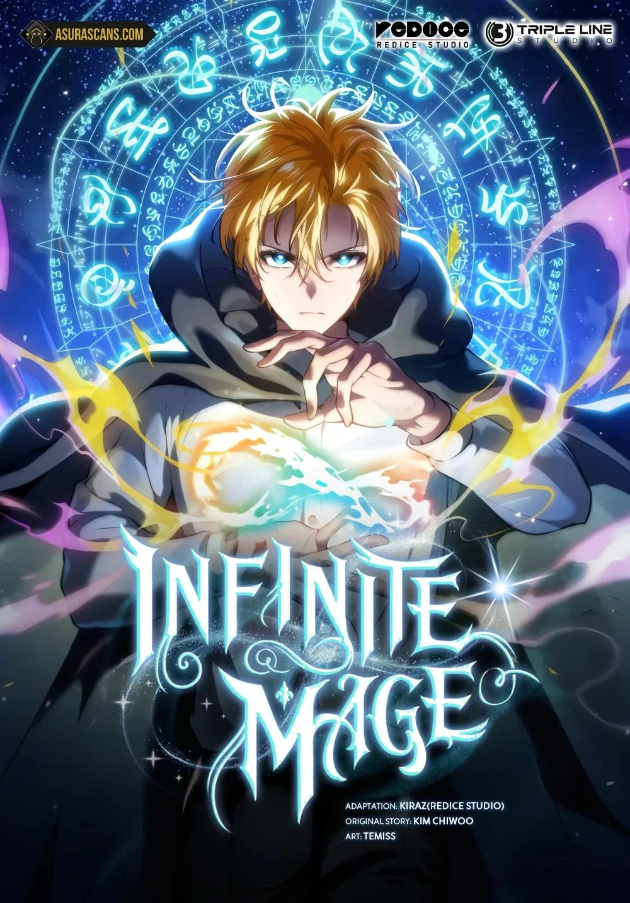
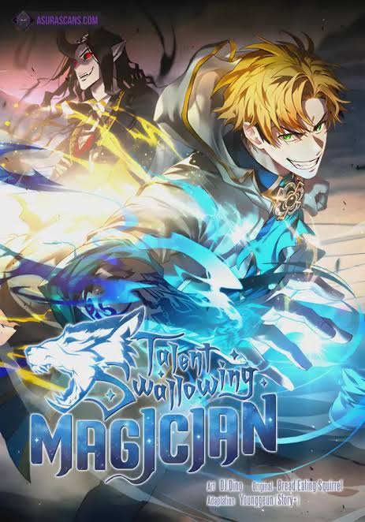
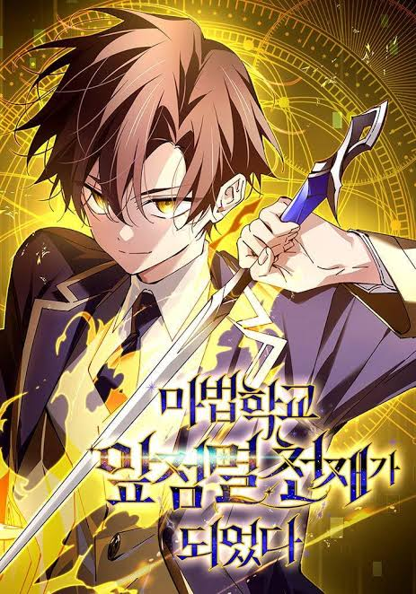

🥇 Infinite Mage
Tags: Fantasy, Magic Academy, Swordsmanship
Chapter Count: 192 (Ongoing)
Author(s): Kim Chiwoo
Artist(s): Themis
After Shirone was abandoned in a stable, he was found by a family of hunters and raised in a loving home. Despite the hardships of the peasant life, he learned how to read from a young age and became obsessed with books, especially ones on the history of magic. One day, he has an unlikely encounter with a mage and learns how to enter the "spirit zone," the first step to learning how to use magic. Although they say only nobles can be mages, will Shirone be able to prove his infinite potential?
Read at:
WEBTOON
MANGADEX
RATINGS
Story: ⭐⭐⭐⭐⭐
Art: ⭐⭐⭐⭐⭐
Pacing: ⭐⭐⭐⭐
Characters: ⭐⭐⭐⭐⭐
World-Building: ⭐⭐⭐⭐
TOTAL: ⭐⭐⭐⭐⭐

🥈 Talent-Swallowing Magician
Tags: Fantasy, Magic Academy
Chapter Count: 148 (On Hiatus)
Author(s): Bread Squirrel
Artist(s): Daum
Elric Melvinger. The sole heir of the prestigious magic family. Though he possessed innate talent, he had too much talent, and as such, could not learn magic. However, he then received a blessing left by his ancestors! [Eat demons.] [Swallow demons.] [Drink demons.] [Continue to keep accumulating demons within yourself, and achieve new magic!] Reach high. Reach a height so high that no one will ever reach me.
Read at:
WEBTOON
MANGADEX
RATINGS
Story: ⭐⭐⭐⭐⭐
Art: ⭐⭐⭐⭐
Pacing: ⭐⭐⭐⭐
Characters: ⭐⭐⭐⭐
World-Building: ⭐⭐⭐⭐⭐
TOTAL: ⭐⭐⭐⭐⭐

🥉 Magic Academy's Genius Blinker
Tags: Fantasy, Magic Academy, System, Transmigration
Chapter Count: 100 (On Hiatus)
Author(s): Eunmilhi
Artist(s): Seoyu
The character with the highest difficulty and the worst performance, Baek Yuseol, was considered a trash character in-game because he could not use magic in a fantasy setting where everyone else could. However… [Because the wrong ending has been reached, 90% of Aether World has been destroyed.] [Please reach the “True Ending.”] Suddenly, those words echoed in my mind before I was transmigrated to the Aether World. [You can use the skill “Blink.”] “Just why did I possess this character?” Blink was the only magic skill I had. Surviving in Stella Academy among genius mages, I became the notorious Blink Mage.
Read at:
WEBTOON
MANGADEX
RATINGS
Story: ⭐⭐⭐⭐⭐
Art: ⭐⭐⭐⭐⭐
Pacing: ⭐⭐⭐⭐
Characters: ⭐⭐⭐⭐
World-Building: ⭐⭐⭐⭐
TOTAL: ⭐⭐⭐⭐⭐